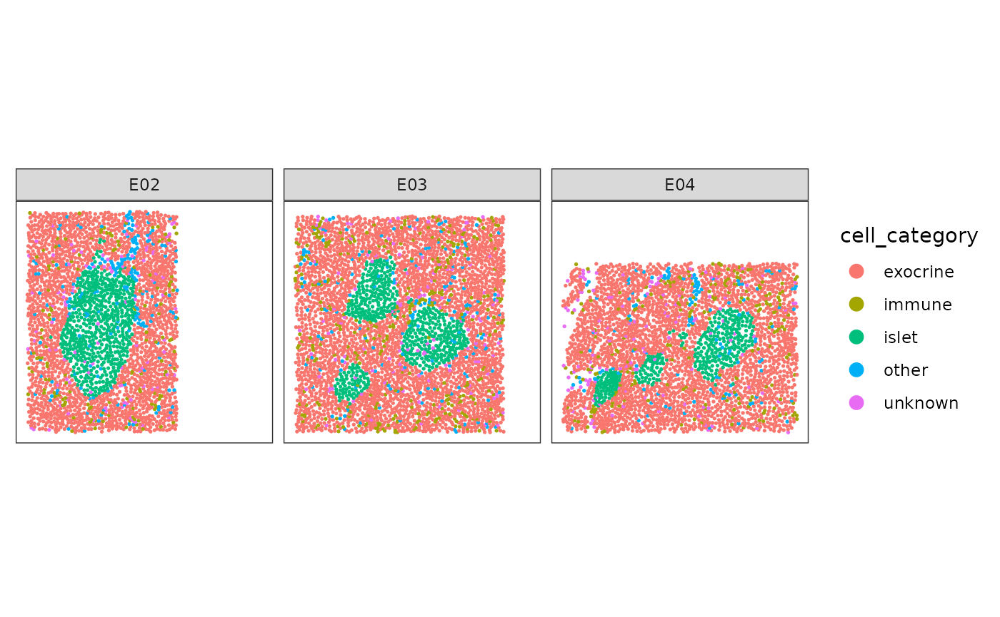
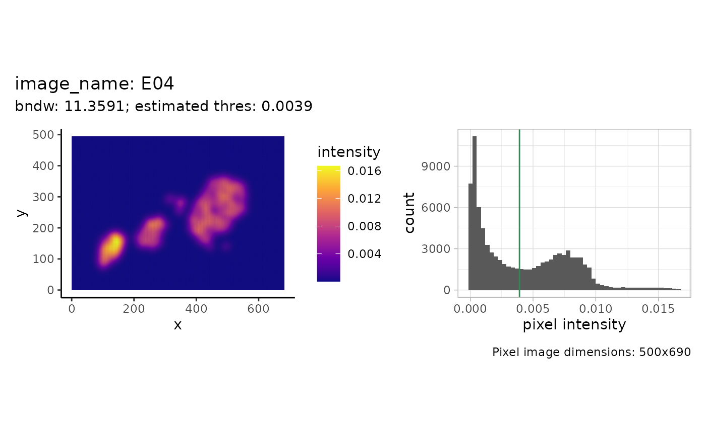
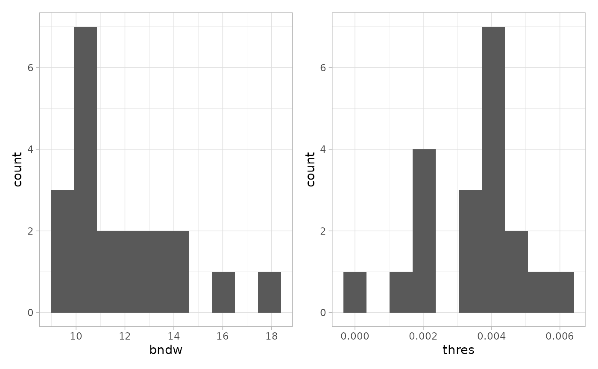
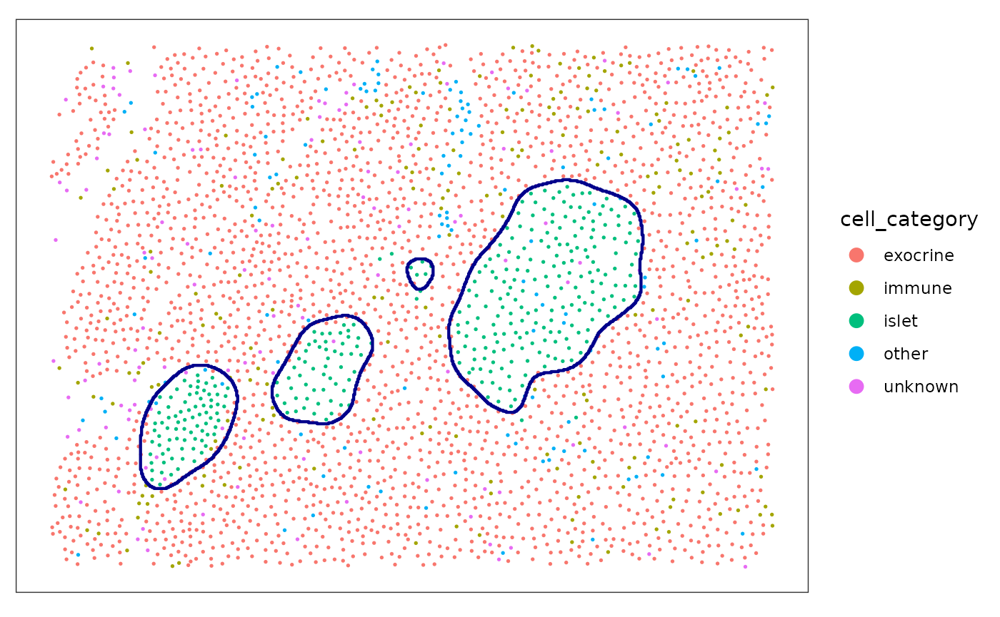
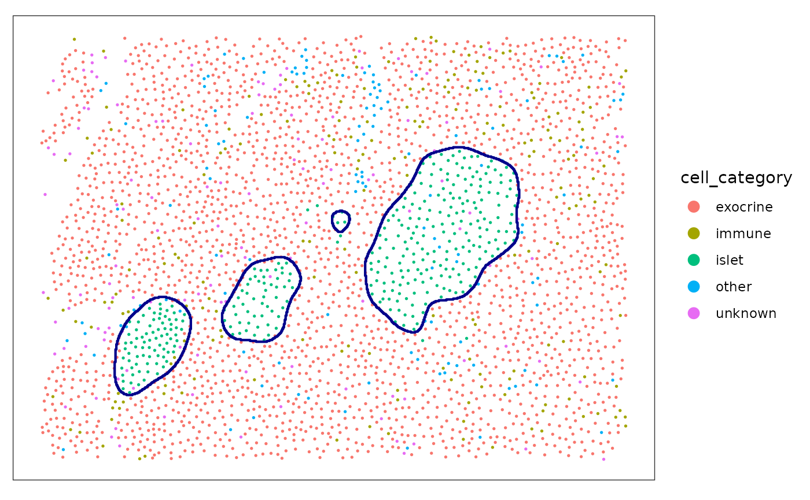
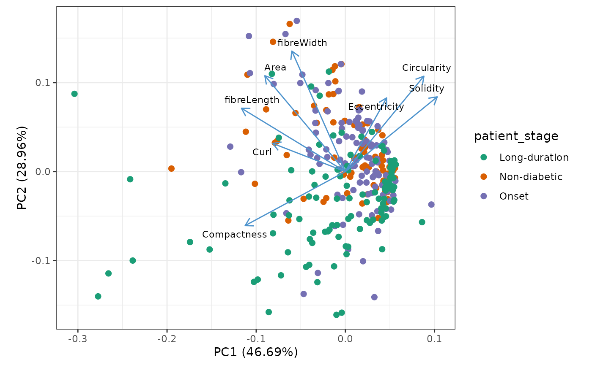
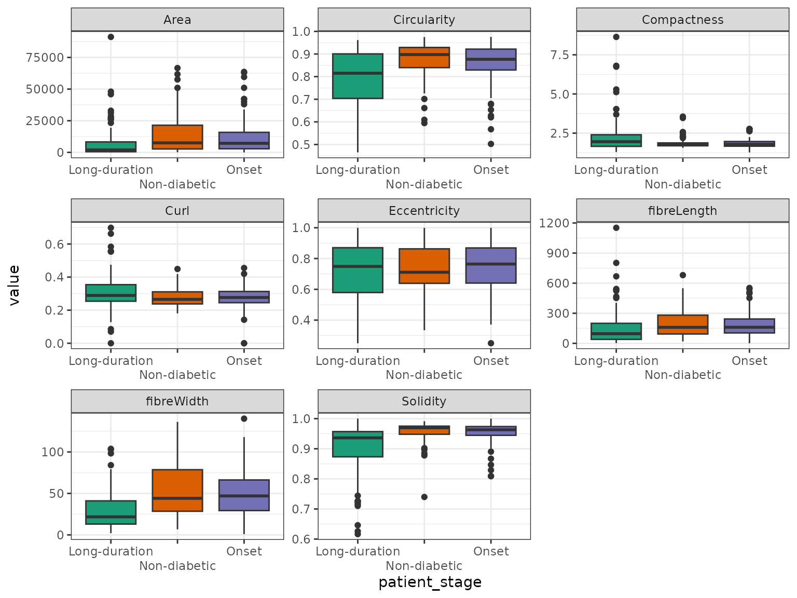

Reconstruction and analysis of pancreatic islets from IMC data
Samuel Gunz
Department of Molecular Life Sciences, University of Zurich, SwitzerlandSIB Swiss Institute of Bioinformatics, University of Zurich, Switzerlandsamuel.gunz@uzh.ch
Mark D. Robinson
Department of Molecular Life Sciences, University of Zurich, SwitzerlandSIB Swiss Institute of Bioinformatics, University of Zurich, SwitzerlandSource:
vignettes/IMC_DiabetesIslets_Vignette.Rmd
IMC_DiabetesIslets_Vignette.RmdAbstract
Reconstruction and analysis of pancreatic islets from IMC data
using the sosta package
Installation
sosta can be loaded from Bioconductor and installed as follows
if (!requireNamespace("BiocManager")) {
install.packages("BiocManager")
}
BiocManager::install("sosta")Introduction
In this vignette we will use data from the package imcdatasets.
The dataset contains imaging mass cytometry (IMC) data of pancreatic
islets of human donors at different stages of type 1 diabetes (T1D) and
healthy controls (Damond et al. 2019).
Note that we will only use a subset of the images
full_dataset = FALSE.
First we plot the data for illustration. As we have multiple images per patient we will subset one patient and a few slides.
plotSpots(
spe[, spe[["patient_id"]] == 6126 &
spe[["image_name"]] %in% c("E02", "E03", "E04")],
annotate = "cell_category",
sample_id = "image_number",
in_tissue = NULL,
y_reverse = FALSE
) + facet_wrap(~image_name)
The goal is to reconstruct / segment and quantify the pancreatic islets.
Reconstruction of pancreatic islets
Reconstruction of pancreatic islets for one image
In this example we will reconstruct the islets based on the point pattern density of the islet cells. We will start with estimating the parameters that we use for reconstruction afterwards. For one image this can be illustrated as follows.
shapeIntensityImage(
spe,
marks = "cell_category",
image_col = "image_name",
image_id = "E04",
mark_select = "islet"
)
We see the density (pixel) image on the left and a histogram of the intensity values on the right. The estimated threshold is roughly the mean between the two modes of the (truncated) pixel intensity distribution.
This was done for one image. The function
estimateReconstructionParametersSPE returns two plots with
the estimated parameters for each image. The parameter bndw
is the bandwidth parameter that is used for estimating the intensity
profile of the point pattern. The parameter thres is the
estimated parameter for the density threshold for reconstruction. We
subset 20 images to speed up computation.
n <- estimateReconstructionParametersSPE(
spe,
marks = "cell_category",
image_col = "image_name",
mark_select = "islet",
nimages = 20,
plot_hist = TRUE
)
We will use the mean of the two estimated vectors as our parameters.We cam now use the function reconstructShapeDensity to
segment the islet of one image. The result is a sf polygon (Pebesma 2018).
islet <- reconstructShapeDensityImage(
spe,
marks = "cell_category",
image_col = "image_name",
image_id = "E04",
mark_select = "islet",
bndw = bndw_spe,
dim = 500,
thres = thres_spe
)
#> hardcopyWe can plot both the points and the estimated islets polygon.
plotSpots(
spe[, spe[["image_name"]] %in% c("E04")],
annotate = "cell_category",
sample_id = "image_number",
in_tissue = NULL,
y_reverse = FALSE,
) +
geom_sf(
data = islet,
fill = NA,
color = "darkblue",
inherit.aes = FALSE, # this is important
linewidth = 0.75
)
#> Coordinate system already present. Adding new coordinate system, which will
#> replace the existing one.
If no arguments are given, the function
reconstructShapeDensityImage estimates the reconstruction
parameters internally.
islet_2 <- reconstructShapeDensityImage(
spe,
marks = "cell_category",
image_col = "image_name",
image_id = "E04",
mark_select = "islet",
dim = 500
)
#> hardcopy
plotSpots(
spe[, spe[["image_name"]] %in% c("E04")],
annotate = "cell_category",
sample_id = "image_number",
in_tissue = NULL,
y_reverse = FALSE,
) +
geom_sf(
data = islet_2,
fill = NA,
color = "darkblue",
inherit.aes = FALSE,
linewidth = 0.75
)
#> Coordinate system already present. Adding new coordinate system, which will
#> replace the existing one.
Reconstruction of pancreatic islets for all images
The function reconstructShapeDensitySPE reconstructs the
islets for all images in the spe object. We use the
estimated parameters from above.
all_islets <- reconstructShapeDensitySPE(
spe,
marks = "cell_category",
image_col = "image_name",
mark_select = "islet",
bndw = bndw_spe,
thres = thres_spe,
ncores = 1
)
#> hardcopy
#> hardcopy
#> hardcopy
#> hardcopy
#> hardcopy
#> hardcopy
#> hardcopy
#> hardcopy
#> hardcopy
#> hardcopy
#> hardcopy
#> hardcopy
#> hardcopy
#> hardcopy
#> hardcopy
#> hardcopy
#> hardcopy
#> hardcopy
#> hardcopy
#> hardcopy
#> hardcopy
#> hardcopy
#> hardcopy
#> hardcopy
#> hardcopy
#> hardcopy
#> hardcopy
#> hardcopy
#> hardcopy
#> hardcopy
#> hardcopy
#> hardcopy
#> hardcopy
#> hardcopy
#> hardcopy
#> hardcopy
#> hardcopy
#> hardcopy
#> hardcopy
#> hardcopy
#> hardcopy
#> hardcopy
#> hardcopy
#> hardcopy
#> hardcopy
#> hardcopy
#> hardcopy
#> hardcopy
#> hardcopy
#> hardcopy
#> hardcopy
#> hardcopy
#> hardcopy
#> hardcopy
#> hardcopy
#> hardcopy
#> hardcopy
#> hardcopy
#> hardcopy
#> hardcopy
#> hardcopy
#> hardcopy
#> hardcopy
#> hardcopy
#> hardcopy
#> hardcopy
#> hardcopy
#> hardcopy
#> hardcopy
#> hardcopy
#> hardcopy
#> hardcopy
#> hardcopy
#> hardcopy
#> hardcopy
#> hardcopy
#> hardcopy
#> hardcopy
#> hardcopy
#> hardcopy
#> hardcopy
#> hardcopy
#> hardcopy
#> hardcopy
#> hardcopy
#> hardcopy
#> hardcopy
#> hardcopy
#> hardcopy
#> hardcopy
#> hardcopy
#> hardcopy
#> hardcopy
#> hardcopy
#> hardcopy
#> hardcopy
#> hardcopy
#> hardcopy
#> hardcopy
#> hardcopyCalculation of structure metrics
As we have islets for all images, we now use the function
totalShapeMetrics to calculate a set of metrics related to
the shape of the islets.
islet_shape_metrics <- totalShapeMetrics(all_islets)The result is a simple feature collection with polygons. We will add some patient level information to the simple feature collection for plotting afterwards.
patient_data <- colData(spe) |>
as_tibble() |>
group_by(image_name) |>
select(all_of(
c(
"patient_stage",
"tissue_slide",
"tissue_region",
"patient_id",
"patient_disease_duration",
"patient_age",
"patient_gender",
"patient_ethnicity",
"patient_BMI",
"sample_id"
)
)) |>
unique()
#> Adding missing grouping variables: `image_name`
all_islets <- dplyr::left_join(all_islets, patient_data, by = "image_name")
all_islets <- cbind(all_islets, t(islet_shape_metrics))Plot structure metrics
We use PCA to get an overview of the different features. Each dot represent one structure.
library(ggfortify)
autoplot(
prcomp(t(islet_shape_metrics), scale. = TRUE),
x = 1,
y = 2,
data = all_islets,
color = "patient_stage",
size = 2,
# shape = 'type',
loadings = TRUE,
loadings.colour = "steelblue3",
loadings.label = TRUE,
loadings.label.size = 3,
loadings.label.repel = TRUE,
loadings.label.colour = "black"
) +
scale_color_brewer(palette = "Dark2") +
theme_bw() +
coord_fixed()
We can use boxplots to investigate differences of shape metrics between patient stages.
all_islets |>
sf::st_drop_geometry() |>
select(patient_stage, rownames(islet_shape_metrics)) |>
pivot_longer(-patient_stage) |>
ggplot(aes(x = patient_stage, y = value, fill = patient_stage)) +
geom_boxplot() +
facet_wrap(~name, scales = "free") +
scale_fill_brewer(palette = "Dark2") +
scale_x_discrete(guide = guide_axis(n.dodge = 2)) +
guides(fill = "none") +
theme_bw()
sessionInfo()
#> R version 4.4.2 (2024-10-31)
#> Platform: x86_64-pc-linux-gnu
#> Running under: Ubuntu 24.04.1 LTS
#>
#> Matrix products: default
#> BLAS: /usr/lib/x86_64-linux-gnu/openblas-pthread/libblas.so.3
#> LAPACK: /usr/lib/x86_64-linux-gnu/openblas-pthread/libopenblasp-r0.3.26.so; LAPACK version 3.12.0
#>
#> locale:
#> [1] LC_CTYPE=C.UTF-8 LC_NUMERIC=C LC_TIME=C.UTF-8
#> [4] LC_COLLATE=C.UTF-8 LC_MONETARY=C.UTF-8 LC_MESSAGES=C.UTF-8
#> [7] LC_PAPER=C.UTF-8 LC_NAME=C LC_ADDRESS=C
#> [10] LC_TELEPHONE=C LC_MEASUREMENT=C.UTF-8 LC_IDENTIFICATION=C
#>
#> time zone: UTC
#> tzcode source: system (glibc)
#>
#> attached base packages:
#> [1] stats4 stats graphics grDevices utils datasets methods
#> [8] base
#>
#> other attached packages:
#> [1] ggfortify_0.4.17 imcdatasets_1.14.0
#> [3] cytomapper_1.18.0 EBImage_4.48.0
#> [5] SpatialExperiment_1.16.0 SingleCellExperiment_1.28.1
#> [7] SummarizedExperiment_1.36.0 Biobase_2.66.0
#> [9] GenomicRanges_1.58.0 GenomeInfoDb_1.42.3
#> [11] IRanges_2.40.1 S4Vectors_0.44.0
#> [13] BiocGenerics_0.52.0 MatrixGenerics_1.18.1
#> [15] matrixStats_1.5.0 ggspavis_1.12.0
#> [17] ggplot2_3.5.1 tidyr_1.3.1
#> [19] dplyr_1.1.4 sosta_0.99.4
#> [21] BiocStyle_2.34.0
#>
#> loaded via a namespace (and not attached):
#> [1] RColorBrewer_1.1-3 jsonlite_1.8.9 magrittr_2.0.3
#> [4] spatstat.utils_3.1-2 ggbeeswarm_0.7.2 magick_2.8.5
#> [7] farver_2.1.2 rmarkdown_2.29 fs_1.6.5
#> [10] zlibbioc_1.52.0 ragg_1.3.3 vctrs_0.6.5
#> [13] memoise_2.0.1 spatstat.explore_3.3-4 RCurl_1.98-1.16
#> [16] terra_1.8-15 svgPanZoom_0.3.4 htmltools_0.5.8.1
#> [19] S4Arrays_1.6.0 curl_6.2.0 AnnotationHub_3.14.0
#> [22] raster_3.6-31 Rhdf5lib_1.28.0 SparseArray_1.6.1
#> [25] rhdf5_2.50.2 sass_0.4.9 KernSmooth_2.23-24
#> [28] bslib_0.9.0 htmlwidgets_1.6.4 desc_1.4.3
#> [31] cachem_1.1.0 mime_0.12 lifecycle_1.0.4
#> [34] ggside_0.3.1 pkgconfig_2.0.3 Matrix_1.7-1
#> [37] R6_2.5.1 fastmap_1.2.0 GenomeInfoDbData_1.2.13
#> [40] shiny_1.10.0 digest_0.6.37 colorspace_2.1-1
#> [43] AnnotationDbi_1.68.0 patchwork_1.3.0 tensor_1.5
#> [46] ExperimentHub_2.14.0 RSQLite_2.3.9 textshaping_1.0.0
#> [49] labeling_0.4.3 filelock_1.0.3 spatstat.sparse_3.1-0
#> [52] nnls_1.6 httr_1.4.7 polyclip_1.10-7
#> [55] abind_1.4-8 compiler_4.4.2 proxy_0.4-27
#> [58] bit64_4.6.0-1 withr_3.0.2 tiff_0.1-12
#> [61] BiocParallel_1.40.0 viridis_0.6.5 DBI_1.2.3
#> [64] HDF5Array_1.34.0 rappdirs_0.3.3 DelayedArray_0.32.0
#> [67] rjson_0.2.23 classInt_0.4-11 tools_4.4.2
#> [70] units_0.8-5 vipor_0.4.7 beeswarm_0.4.0
#> [73] httpuv_1.6.15 goftest_1.2-3 glue_1.8.0
#> [76] nlme_3.1-166 rhdf5filters_1.18.0 promises_1.3.2
#> [79] grid_4.4.2 sf_1.0-19 generics_0.1.3
#> [82] gtable_0.3.6 spatstat.data_3.1-4 class_7.3-22
#> [85] sp_2.2-0 XVector_0.46.0 spatstat.geom_3.3-5
#> [88] stringr_1.5.1 BiocVersion_3.20.0 ggrepel_0.9.6
#> [91] pillar_1.10.1 later_1.4.1 BiocFileCache_2.14.0
#> [94] lattice_0.22-6 bit_4.5.0.1 deldir_2.0-4
#> [97] tidyselect_1.2.1 locfit_1.5-9.11 Biostrings_2.74.1
#> [100] knitr_1.49 gridExtra_2.3 bookdown_0.42
#> [103] svglite_2.1.3 xfun_0.50 shinydashboard_0.7.2
#> [106] smoothr_1.0.1 stringi_1.8.4 UCSC.utils_1.2.0
#> [109] fftwtools_0.9-11 yaml_2.3.10 evaluate_1.0.3
#> [112] codetools_0.2-20 tibble_3.2.1 BiocManager_1.30.25
#> [115] cli_3.6.3 xtable_1.8-4 systemfonts_1.2.1
#> [118] munsell_0.5.1 jquerylib_0.1.4 Rcpp_1.0.14
#> [121] spatstat.random_3.3-2 dbplyr_2.5.0 png_0.1-8
#> [124] spatstat.univar_3.1-1 parallel_4.4.2 blob_1.2.4
#> [127] pkgdown_2.1.1 jpeg_0.1-10 bitops_1.0-9
#> [130] viridisLite_0.4.2 scales_1.3.0 e1071_1.7-16
#> [133] purrr_1.0.2 crayon_1.5.3 rlang_1.1.5
#> [136] KEGGREST_1.46.0